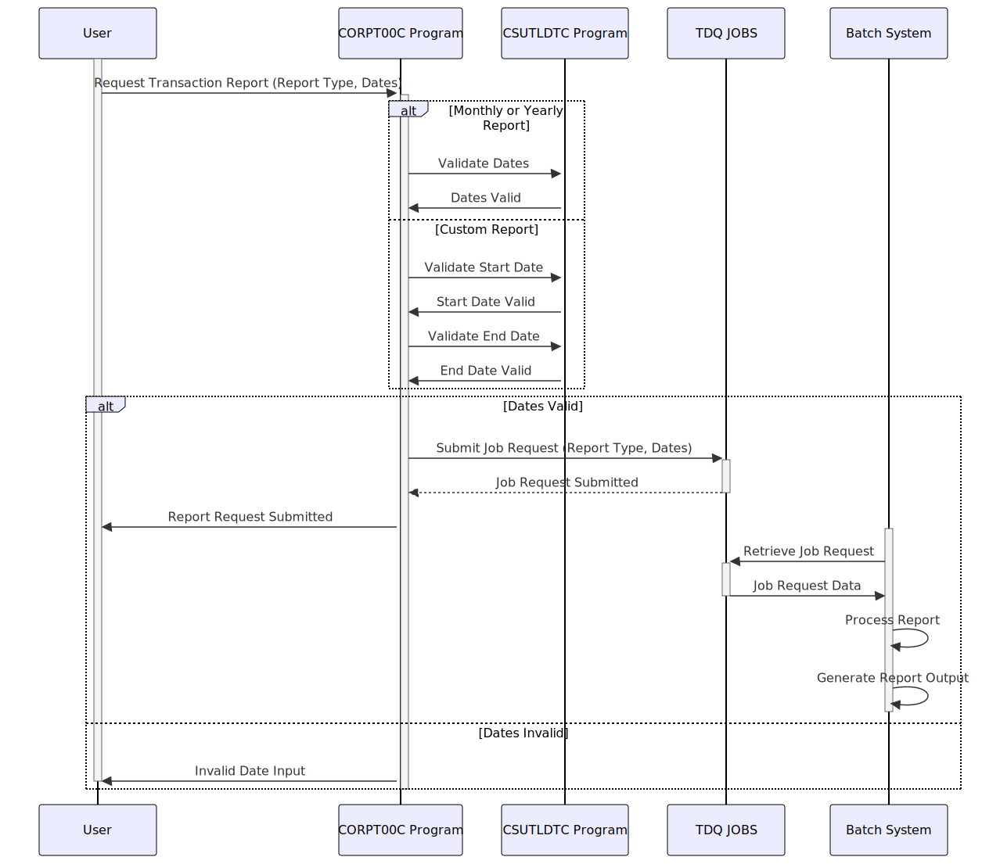

Gerado em: 1º de outubro de 2024
Título do Documento: CardDemo Submissão de Relatório de Transações - Especificação do Programa
Descrição Resumida:
Este documento de especificação detalha a funcionalidade do programa CORPT00C.cbl dentro da aplicação CardDemo. Este programa permite que os usuários iniciem a geração de relatórios de transações com base em períodos predefinidos (mensal, anual) ou um intervalo de datas personalizado. O programa valida a entrada do usuário, prepara uma solicitação de trabalho em lote e a envia para processamento.
Histórias do Usuário:
Como usuário comercial, preciso gerar relatórios resumidos de transações de cartão de crédito para vários períodos (mensal, anual ou intervalo de datas personalizado) para analisar as tendências e o desempenho dos negócios.
Epic Relacionado:
5 - Relatórios e Análise
Requisitos Funcionais:
-
Seleção do Tipo de Relatório:
- O programa deve permitir que o usuário escolha entre três tipos de relatório:
- Mensal
- Anual
- Personalizado
-
Entrada de Data (Relatório Personalizado):
- Para o tipo de relatório “Personalizado”, o programa deve solicitar ao usuário que insira uma data de início e uma data de término.
-
Validação de Data:
- O programa deve validar as datas inseridas quanto a:
- Formato: As datas devem estar no formato AAAA-MM-DD.
- Ordem Lógica: A data de início não pode ser posterior à data de término.
- Datas Válidas: As datas inseridas devem representar datas de calendário válidas.
-
Geração de Solicitação de Relatório:
- Com base no tipo de relatório selecionado e nas datas inseridas, o programa deve gerar uma solicitação de trabalho em lote contendo:
- Tipo de relatório
- Data de início
- Data de término
-
Submissão de Trabalho:
- O programa deve enviar a solicitação de trabalho em lote gerada para uma fila para processamento pelo sistema de processamento em lote.
-
Feedback do Usuário:
- O programa deve fornecer ao usuário feedback sobre o status da solicitação do relatório:
- Mensagem de confirmação após o envio bem-sucedido
- Mensagem de erro em caso de entrada inválida ou outros problemas
Requisitos Não Funcionais:
- Desempenho: O programa deve processar a entrada do usuário e enviar a solicitação de relatório com latência mínima, idealmente em 2 segundos.
- Confiabilidade: O programa deve ser robusto e lidar com erros inesperados normalmente, sem travar. Deve garantir a integridade dos dados e evitar a geração de relatórios incorretos.
- Manutenibilidade: O código do programa deve ser bem documentado e seguir uma estrutura modular para facilitar futuras modificações e aprimoramentos.
- Segurança: O programa deve ser acessível apenas a usuários autorizados com as permissões necessárias para gerar relatórios de transações.
Critérios de Aceitação:
- O programa compila e vincula com sucesso, sem erros ou avisos.
- O programa exibe corretamente a tela de seleção do tipo de relatório e lida com a entrada do usuário.
- O programa valida com sucesso as datas inseridas e fornece mensagens de erro apropriadas para entrada inválida.
- O programa gera uma solicitação de trabalho em lote bem formatada, contendo o tipo de relatório, a data de início e a data de término corretos.
- O programa envia a solicitação de trabalho para a fila designada sem erros.
- O programa fornece ao usuário mensagens de feedback apropriadas (confirmação ou erro) com base no resultado do envio da solicitação.
- O programa lida com erros inesperados normalmente e exibe mensagens de erro informativas para o usuário.
Melhorias de Código:
- Tratamento de Erros: Implemente uma rotina de tratamento de erros centralizada para capturar e registrar erros de forma consistente. Exiba mensagens de erro detalhadas para o usuário, incluindo o código do erro e uma breve descrição.
- Modularidade: Divida o parágrafo
PROCESS-ENTER-KEY em sub-rotinas menores e mais gerenciáveis com base no tipo de relatório. Isso melhorará a legibilidade e a manutenção do código.
- Biblioteca de Validação de Data: Considere o uso de uma biblioteca ou utilitário de validação de data dedicado em vez da lógica de validação embutida. Isso melhorará a reutilização do código e potencialmente simplificará o processo de validação.
- Configuração: Externalize parâmetros configuráveis, como o nome TDQ (
JOBS) e o nome do programa em lote (TRANREPT), para um arquivo de configuração separado ou variáveis de ambiente. Isso melhorará a flexibilidade e a facilidade de implantação.
Melhorias de Segurança:
- Sanitização de Entrada: Implemente a sanitização de entrada adequada para evitar vulnerabilidades como injeção de SQL ou injeção de comando, embora a implementação atual sugira um sistema orientado a lote.
- Autenticação e Autorização: Imponha mecanismos rígidos de autenticação e autorização para garantir que apenas usuários autorizados possam acessar e iniciar o processo de geração de relatórios.
- Auditoria: Registre todas as solicitações de geração de relatórios, incluindo o ID do usuário, carimbo de data/hora, tipo de relatório e intervalo de datas, para fins de auditoria e rastreamento.
Diagrama Conceitual:

–Made by “Smart Engineering” (by Compass.UOL)–